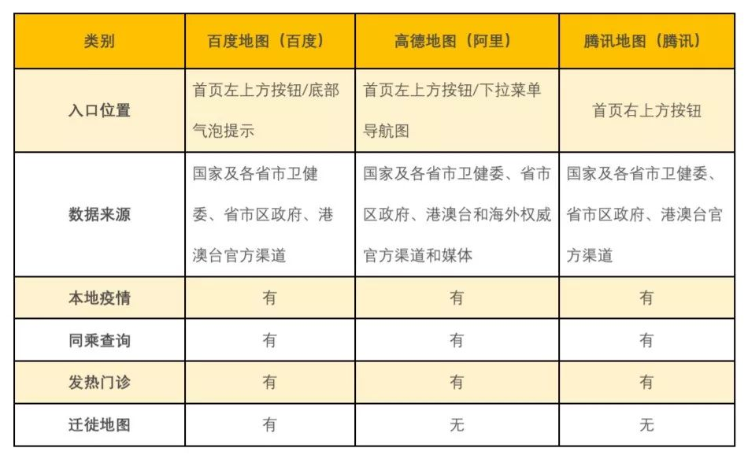
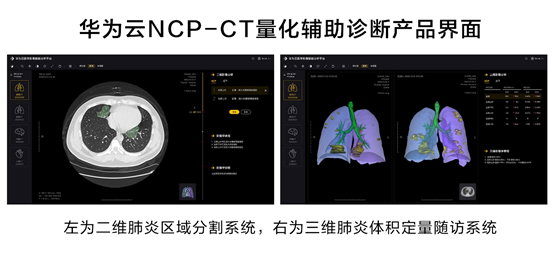
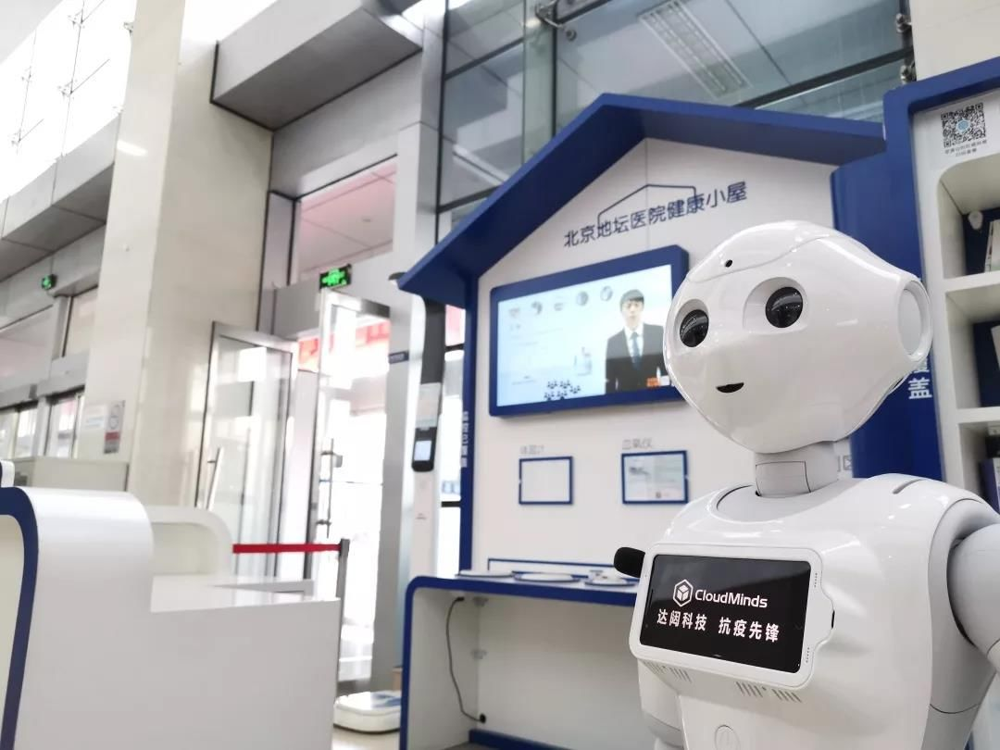

口述实录 | 跨省运送核酸检测设备“历险记”
原文链接 备份链接 大家新闻里总是听到“核酸检测试剂盒”这个东西，试剂盒里的试剂自己不能判断阴性阳性的，这些试剂要放到我负责的核酸检测设备里，才能得出检测结论。 口述 | 彭 鑫 整理 | 黄 祺 现在大家说起去湖北，都感到非常恐惧。但因 …

谈及中国科技大跃进，人们总会不吝赞美“互联网”这个三好学生。但盛名之下，互联网是否如人们所见所想所希望的那么神乎其技，2019年末突如其来的疫情是枚试金石。互联网公司捐款捐物固然好，但已无法满足人们的“技术想象”：直面疫情，互联网公司到底能做点什么？
放大灯团队丨策划
大绵羊丨作者
一萌、普通酱丨编辑
百度迁徙丨题图
神乎其技，考之以疫
直到今天，控制疫情的最好方式依然是简单的物理隔离，其本质是切断“关系链”。与之类似，绝大多数互联网公司的商业模式也是在“关系链”上做文章：服务于分散在一个个终端设备前的独立用户。因此控制疫情与互联网可谓一拍即合。
互联网公司在疫情中出钱出力，为疫情提供服务，但这与医疗机构的工作有本质区别，他们拿出的“新技术”能否真正有利于疫情防控吗？
- 用最多的数据，造最像的平台 -
在百度地图、高德地图、腾讯地图三款App上，均在首页的显眼位置增加了“疫情播报”入口。三家公司与卫健委等机构进行数据合作，除了实时更新全国和各地疫情详细数据外，还统一配备了同城查询、发热门诊查询等功能。

各家数据入口对比丨放大灯团队制图
三家公司的产品功能大同小异，数据均来自国家及各地卫健委（偶有出入，为实时更新速度快慢所致）。不光BAT，类似疫情播报产品在很多大型科技公司的核心产品中也不鲜见，例如地图、浏览器、新闻App等，意在为用户提供可信赖的信息服务。
这些消耗大量资源开发的功能提供的重复信息，当然可以满足用户对疫情信息的需求，然而用户在出现疑似症状时，能否藉这些产品获得救治，就难说了。随着疫情播报类产品的纷纷上线，相关功能不再是一个App或者品牌获客能力的加分项。
也有些为数不多的差异化产品，例如百度的“迁徙系统”。对上班族规划返程时间、规避春运客流高峰，有一定的参考价值，但也仅此而已。

百度迁徙系统 | 官网截图
总之，大数据仅仅是一个高效的信息提供者，数据平台既不能消灭病毒，也不能防护病毒感染，所能起到的作用无非是提醒用户“疫情就在身边”，在紧张的气氛里做好个人防护。
- 云计算让检测更快了，但到底谁在做？ -
在云计算方面，首先响应的依然是BAT。1月29日，阿里、百度、腾讯先后向研究机构开放云计算算力，以支持病毒的基因测序和突变预测、新药的筛选和研发等工作。
2月1日，浙江省疾病预防控制中心上线了与阿里达摩院医疗AI团队、杰毅生物技术公司共同研发的全基因组检测分析平台，依靠阿里云的算力和算法，将新冠肺炎疑似病例确诊时间从数小时缩短至半小时。[1]
虽然杰毅生物的新型冠状病毒核酸检测试剂盒，到现在还没有获得国家药监局的上市批准，但也已被允许在医疗机构先试用，疫情解除后再按程序审核。
归根到底，在抗疫领域初次尝试的云计算，只能起到辅助作用，真正起作用的还得看生物技术公司——
在新冠肺炎病毒基因序列公布（1月12日）后的1~2天，国内四五家生物医药公司就先后推出了针对病毒检测的试剂盒。2月2日，华大基因生产的新型冠状病毒检测试剂盒获批。只用一个周的时间，华大基因生产了超过65万人份的新型冠状病毒检测试剂盒，日产能达到10万人份/天。[2]
- 确定的体温，不确定的隐私 -
国家工信部、科技部等相关部门和组织向社会征集“红外测温”相关的人工智能技术方案，以应对年后的返程高峰。百度、旷视、商汤、三零凯天等泛互联网公司均推出了相应的解决方案。
百度和商汤的“红外体温检测+身份识别”的解决方案较为常规：只要在人流关卡处设置固定点位、安装红外摄像机，利用红外热成像技术检测其额头温度。该技术最多支持在一定面积内同时对3~5人进行检测，且不需要路人的主动配合。[3]
旷视则侧重戴口罩后人脸识别与测温技术的研发。在疫情中，口罩和帽子会严重影响AI识别的准确度，旷视推出了AI红外测温系统“明骥”[4]，主要优化了佩戴口罩的识别场景，提高AI红外测温的准确度。[5]

AI红外测温系统“明骥”后台 | 猎云网
三零凯天的公共场所应急医疗寻人系统结合了AI技术和大数据，在鉴别高温人员后，再根据人脸信息与公安人脸库进行比对，从而确定该对象的身份。[6]
你得承认，这些技术真的很先进，但容我们提醒一下：尽管病原体都是冠状病毒，但新冠肺炎与SARS症状差别较大。SARS的典型早期症状是高热，但不少案例显示，新冠肺炎未必会发热，有些感染者甚至不会有任何症状，因此，体温检测只能作为基础的大规模防治方法。AI测温技术在交通枢纽上的应用，最多也只能算是一道保险手段，避免极少数已经有发热症状的病人的进一步传染。
而在疫情面前，中国人脆弱的隐私问题，成了治理疫情的另外一个代价。因为涉及到严格、复杂的隔离检查程序，以及疫情管理需要考察的“密切接触者”概念让隐私问题顺着社会关系链条进一步扩大化，隐私问题变得更加复杂。
- 解放放射科？未必 -
新冠肺炎疫情发生以来，核酸试剂盒与CT检查的“确诊标准”之争引人瞩目。互联网公司无法生产试剂盒，也不能生产CT机，但可以在解读CT影像时做点文章。
2月10日，华为云宣布开发出了针对新冠肺炎AI辅助诊断服务，几秒的时间内生成读片结果[7]；5天后，阿里云也推出同类产品，宣称准确率达96%[8]。


华为云AI量化辅助诊断 | 华为官网
AI能有多快并不是读片系统的关键，放射科医生更关心的是到底准不准。新冠肺炎是个急病，但AI学习往往需要慢工出细活。
AI读片不是新技术。上海市胸科医院在2017年就引入了一套“AI读片”的辅助系统，把10分钟/张的读片速度缩至数秒。当时，上海胸科医院每月肺部病例超过1.6万例，CT月读图量超过640万幅。[9]华为云的读片系统只分析了数百案例就自称业界领先[7]，阿里云的产品有5000份学习案例[8]，胸科医院数以万计的样本也无法让AI读片尽善尽美，更别说新冠肺炎这个新病种了。

人工智能读片系统 | 上海市胸科医院
一口喂出来的AI读片系统，我们该怎么用它？
从疫情爆发到2月7日，武汉市金银潭医院放射科21名医生30多天轮班无休，看了约150万帧片子（每幅片子600~800帧）。[10]两相比较，如果AI能代替读片，那么金银潭医院的21名医生是否可以不用这么辛苦？并不是。
事实上，在影像科工作流程中，AI所能做到的是做第一步筛查工作，提高工作效率，找出可能出现问题的影像细节，后续的解读仍然需要影像科医生来做。
- 打打下手的机器人 -
为了减少医护工作者与患者不必要的接触，尽可能避免意外感染，自动化的智能硬件是个不错的主意。越来越多的医院用上了互联网公司开发的智能机器人。
在这次疫情中，较早将智能机器人应用在医疗机构的公司是猎豹移动和达闼科技。前者用于代替人工进行导诊、对病人进行初步诊疗，甚至作为沟通中介帮助实现医生远程诊疗，避免医护人员与病患直接接触[11]；后者用于代替医护人员完成远程看护、测量体温、消毒、清洁和送药的工作并预警突发情况[12]。

猎豹移动智能服务机器人 | 和讯网

达闼科技投放于北京地坛医院的智能服务机器人 | 达闼科技官网
从功能来看，两家的医疗机器人有望解放不少需要大量接触病患的基层医务工作者，替代一些不需要太多的专业技能的导诊、测温、送药、消毒等基础工作，但也只能这样“打打下手”，充其量是“服务型机器人”，比你在海底捞吃饭时用的自动送菜机器人没有高到哪里去（其实给海底捞做送餐机器人的厂家普渡科技和擎朗科技，都把机器人开到了隔离区[13]）。
- 无人车，求不添乱 -
在过去几年里，百度一直以Apollo无人车为傲，但是在武汉疫情中，半路杀出的华为反倒拔了头筹。
2月4日，2台华为5G无人车送往了武汉肺炎疫情防控指挥部，华为的无人车包括自动驾驶、远程驾驶、调度监控后台3个模块，将用于医院隔离病区作业[14]。直到2月10日，姗姗来迟的百度才官宣免费开放低速微型无人车套件。
根据百度Apollo发布的信息，百度只承诺了在疫情期间为满足条件的企业提供技术适配、供应链和云服务的支持，并未提供免费的车辆[15]；百度的合作企业提供的低速微型无人车适用于清洁消毒、物流送餐等场景，在某些功能上与智能护理机器人颇为相似，替代性强。

Apollo生态合作伙伴智行者清洁消毒车 | 百度
无人车与机器人在疫情中的作用类似：我们希望它替代人类，在疫区做更多工作，以减少工作人员感染或易感人群感染的机会。
但在实际使用中，这些设备能用在哪？取代多少人工作？设备的维护与消毒成本？还需综合评估性价比。同时，我们也需要评估是否有不利于正常防疫工作的风险。
如某些传播案例声称，其产品是“可以承载4人及两部担架的无人车”。这里的问题是，救护车隔离驾驶舱，是比无人驾驶更简易可行的方案；即使减少一个司机的确可以降低传染风险，无人驾驶能像救护车一样闯红灯、鸣笛喊话开路吗？因为特种车辆“非标准化”的行驶需求，在目前阶段，无人救护车是不切实际的。
当然，一个行业默契的事实是：某些无人驾驶产品，并不会真正用于抗疫前线，只活跃在资讯文章中。能为疫情做些贡献固然不错，但最好别为了宣传的噱头而蹭医疗、防疫的热度。
承认吧，“抗疫”一线不是互联网公司的主战场
互联网行业确有自己的优势，它们既有能在资本市场撬动千亿杠杆的能力，也有从零起步研究技术的气概。但与试图点满科技树的硅谷巨头Alphabet不同，中国互联网公司近20年里拿得出手的所谓技术，其本意还是服务于商业模式。
无论花样百出的AI测温，还是5G“赋能”的无人车，互联网技术在疫情中所能做到的，是利用其先天优势，在“链条关系”上做文章——但也仅止于此，它们在“切断新冠肺炎传播途径”上敲敲边鼓，而随着更多的企业开始复工、病毒潜伏期延长，这些所谓“高端技术”也显得日渐无趣且无用。
另一方面，在根除传染病上，我们无法指望互联网公司拿出什么硬核技术，它们现有的技术甚至很难直接参与到疾病的治疗环节。即便是云计算，能起到的作用也止步于新冠病毒测序和预测突变。在寻找、研制针对新冠病毒的特效药或广谱疫苗方面，互联网公司的作用仍然十分有限。
术业有专攻，不能强求互联网公司具备生物医药公司那种实力，绝大多数公司在疫情中掏出压箱底的技术，本意是为了人民免受病痛，但善意≠正确，善意≠有效，很多情况下，这些技术在抗疫一线大多于事无补。更何况，不少互联网公司对常规技术做过度包装，趁着疫情怒刷存在感。
互联网公司无需因为自贴“技术公司”标签而顾盼自雄，无需在所有技术领域表现得凡事高人一头。相比之下，不在正面战场刷存在感，而在大后方开辟新战场，以实力维持人们正常生活的互联网公司，更值得尊敬。
比起2003年的非典，如今的互联网已经有了当时无法企及的完备供应链和物流、实时的信息传播平台、全套的网上服务和在线办公、在线教育系统——京东依靠在武汉的亚洲一号智能园区，成了武汉市民采购生活用品的渠道之一；钉钉被学生狂刷了一拨差评，也成了特殊时期的空中课堂；武汉市民出行不便，有滴滴的支援车队保障紧急需求……这些“即使无法复工复学也能运行的技术”，正是非典时期不具备的优势。
互联网公司能让疫情好转吗？会的，只不过慢一些罢了。
“阿玛拉定律”这样说：“我们往往高估一项技术带来的短期影响，但又低估它的长期影响。”无论17年前那场疫情是否成就了阿里和京东，一个事实是，电商确实在2003年之后风生水起，数字产业也以前所未有的速度繁荣起来。
如今，新冠肺炎的意外到来，给这个没有新鲜事的互联网提出了一个新命题：疫情是否会触发一场实实在在的互联网技术革命而非表面的模式繁荣？
References：
[1] 云栖社区：新冠病毒破解有了巨大突破，达摩院做了什么？https://yq.aliyun.com/articles/743435?spm=5176.10695662.1996646101.searchclickresult.42b046aeld8iRX&aly_as=EvVx4dGrCzT[2] 观察者网：华大基因：新冠病毒检测试剂盒日产能已达10万人份https://www.guancha.cn/ChanJing/2020_02_11_535618.shtml[3] 百度AI：北京春运返京潮将至 百度AI体温检测技术落地清河站助力疫情防控https://mp.weixin.qq.com/s/0O2TCpNFVgens8FKBHEEAA[4] 猎云网：旷视AI测温系统落地海淀，测温精度误差仅为正负0.3摄氏度https://www.lieyunwang.com/archives/462986[5] 旷视MEGVII：戴口罩的人脸识别？被误解了https://mp.weixin.qq.com/s/cnWPQzIhg4lKtKwqGSBhSg[6] 通信产业网：“智斗”疫情，哪些通信黑科技在使劲？http://www.ccidcom.com/yaowen/20200203/gmHTiB7JIHkCMUEe2178g198oho9g.html[7] 华为云：华为云推出新冠肺炎AI辅助诊断服务，CT量化结果秒级输出https://bbs.huaweicloud.com/blogs/146504[8] 雷锋网：20 秒出结果！AI 辅助诊断新冠肺炎：达摩院出品，96% 准确率https://www.leiphone.com/news/202002/X5rRc3C5vVEUO6dt.html[9] 新民晚报：别惊讶，你的CT第一“读片人”早就是AI了http://newsxmwb.xinmin.cn/chengsh/2019/08/20/31573785.html[10] 长江日报：21双眼睛盯了150万帧患者CT片子http://cjrb.cjn.cn/html/2020-02/07/content_164285.htm[11] 新华网：共克时艰，猎豹移动科技战“疫”进行时http://www.xinhuanet.com/enterprise/2020-02/14/c_1125574831.htm[12] 腾讯一线：首批5G智能机器人加入疫情抗击 可减少人员交叉感染https://tech.qq.com/a/20200130/015767.htm[13] 雷锋网：一线 | 疫情防控大战中，隔离区里的机器人们https://www.leiphone.com/news/202002/mZEyA5VM1vxsYiEe.html[14] AI全球总部：5G无人车，挺进“武汉疫区”！超赞！https://mp.weixin.qq.com/s/8kN222wLnu_t3sXhZ6yaVw[15] 百度：中国无人车在行动！百度Apollo免费开放低速微型车套件等助力疫区
https://mp.weixin.qq.com/s/Y7yhQUoMNLNH0sYc64hh_w
- 我们的文章，也许你会感兴趣 -


- 详细了解“放大灯”及招聘信息，请点这里 -

原文链接 备份链接 大家新闻里总是听到“核酸检测试剂盒”这个东西，试剂盒里的试剂自己不能判断阴性阳性的，这些试剂要放到我负责的核酸检测设备里，才能得出检测结论。 口述 | 彭 鑫 整理 | 黄 祺 现在大家说起去湖北，都感到非常恐惧。但因 …
原文链接 备份链接 【财新网】（记者 张兰太）中国疾控中心最新论文显示，全国实际医务人员感染新冠病毒病例已经达到3019例，死亡病例为5例；而国家卫生健康委副主任曾益新在2月14日的国新办发布会上曾披露，截至2月11日24时，全国共报 …
原文链接 备份链接 【财新网】（记者 丁捷 综合）因新冠肺炎去世的人数还在增长。今年2月，华中科技大学连接痛失四位重量级学者，其中一位为86岁的中国工程院院士段正澄。2月18日上午，武汉武昌医院再传出令人悲痛的消息，奋战在抗疫一线的院长 …
原文链接 备份链接 *************▲ *************钟南山院士团队与武汉前方的广东医疗队ICU治疗团队开展远程视频会诊。 （南方周末记者 崔慧莹/图） 全文共1002字，阅读大约需要2分钟。 钟南山认为，即便峰 …
原文链接 备份链接 财经十一人 财经十一人 About Feature 由《财经》杂志公司产业报道团队创建，研讨企业成败，探究行业兴衰，推动阳光商业 Today 新冠肺炎疫情暴发至今，确诊病例、死亡人数均已超过SARS，高福以往言论受到质 …